Home
Workflow Builder is currently in Beta
Workflow Builder is currently available to all RingCentral customers in the United States. We plan to expand access to other geographies and countries in June 2025. If you are an AT&T Office@Hand customer, or live outside the United States you are free to use Workflow Builder's predecessor Automator in the meantime.
Automate SMS and more with Workflow Builder
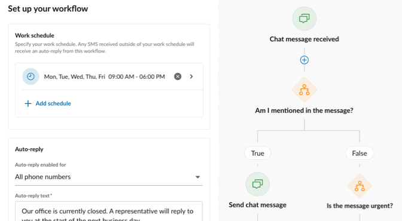
Welcome to RingCentral's Workflow Builder, a no-code workflow design tool created to help RingCentral customers automate common tasks using templated and custom workflows.
Explore existing templates, or build your own custom workflow to meet your exact needs.
Watch video Get startedGetting started using Workflow Builder
The fastest way to get started using RingCentral's Workflow Builder is to select a workflow from a list of pre-packaged, pre-designed workflow templates. Workflow templates make implementing a workflow as simple as filling out a form.
To create a workflow, click the "New workflow" button found in the upper-right corner of the workflow listing screen. You will then be presented with a number of templates to choose from, the most popular being:
-
Reply to an SMS when you are out of the office, on vacation or away.
-
Let people know that you missed their call because they called during non-business hours.
Workflow Builder: a NO-code automation tool
The greatest advantage of Workflow Builder is that it is generally accessible and usable to everyone. Workflow Builder helps to democratize the RingCentral Developer Platform by allowing NON-developers and developers alike to build and deploy simple applications to perform repeatable tasks.
Even if you don't know how to code, or even if the thought of "code" gives you hives, anyone can create a workflow using a ready-made template.
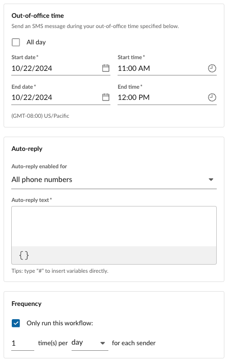
Workflow Builder: a LOW-code developer tool
For those more comfortable with basic technical concepts, like if-statements, variables and actions, Workflow Builder provides users with a simple drag-and-drop workflow design tool to make building apps quick and easy. You do not need to know a programming language, and with a little time, literally anyone can learn how to create a workflow.
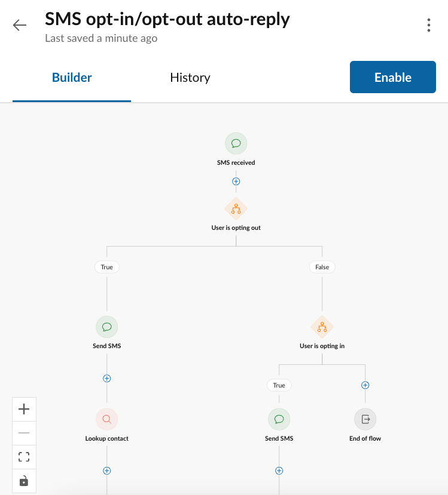
User Guide
Getting started with Workflow Builder
Create a workflow from a template
There are several ways to create a workflow. The first and most common is by installing a pre-made workflow using a workflow template. You can find and discover these pre-made solutions by clicking the "New workflow" button found on the listing screen for your workflows, or by clicking the "Templates" tab from the Workflow Builder home screen.
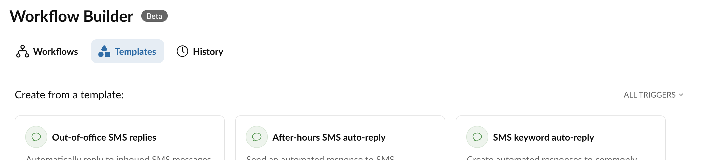
Workflow Builder provides two other ways to create a workflow, which is accessed by clicking the "New workflow" button from the home screen.
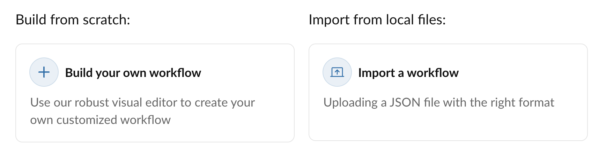
Import a workflow or recipe
Discover a variety of popular workflows in our catalog of workflow recipes. Some recipes provide a complete solution to common use case, like our missed call auto-reply. Other recipes are helpful learning tools that can help you jump start the workflow creation process, like our recipe on how trigger workflows from IVR menus.
Create a custom workflow
The next way to create a workflow is via Workflow Builder's workflow designer, a visual drag-and-drop tool that allows users to define custom workflows using their own logical rules and actions for responding to certain events that can trigger a workflow to be executed.
Importing and exporting workflows
Importing and exporting workflows provides users with a convenient way to share workflows with others. This feature can be used within a company to help distribute workflows across a workforce, or it can be used to share helpful and useful workflows with the Workflow Builder community at large, which is actively encouraged.
Exporting workflows
Once a custom workflow has been designed, built, and tested, you can share the workflow with others on your team, or with the larger RingCentral Workflow Builder community. To share a workflow, export the workflow to a file, send the file to a coworker, and invite them to import the file. To export a workflow:
- If you are starting from a template, convert the workflow to a custom workflow
- Edit and customize the workflow
-
From the "More" menu, select "Export as a JSON file"
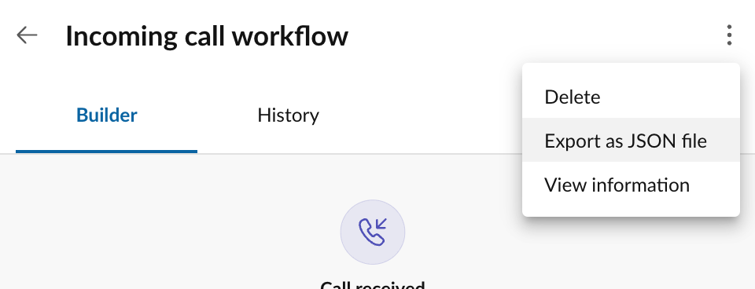
Setting your export parameters
Workflows can be complex with many elements that can be customized. In fact, every input associated with every action that comprise a custom workflow is conceivably a way to customize the behavior of a workflow. At times, it may be important to constrain what elements of a workflow can be customized. Perhaps your company wants to standardize and control what a specific auto-reply message might be, while preserving the ability to customize what phone numbers a workflow is active for. In this case, one can define an export parameter during the export process that allows users to customize only select elements of a workflow.
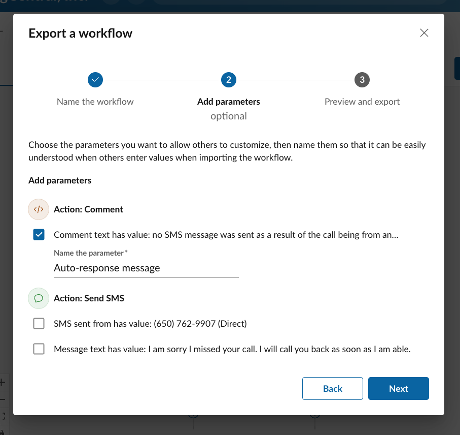
Export parameters are associated with a specific action input, and then assigned a label. When the workflow is later imported, the user importing the workflow will be prompted to provide a value for each defined export parameter.
Importing workflows
To import a workflow you must first possess an export file (see "Exporting workflows" above). Importing a workflow will result in the creation of a custom workflow within that user's Workflow Builder account. At the time the workflow is imported, if the workflow has any export parameters, the user will be prompted to provide a value for each of those export parameters.
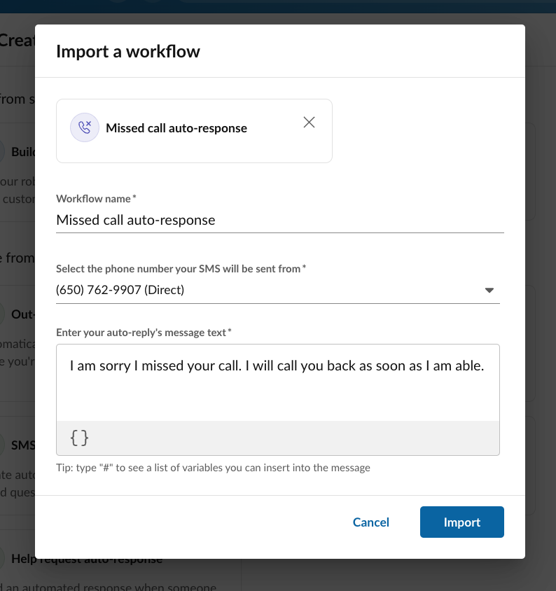
Converting templates to custom workflows
Converting a templated workflow to a custom workflow CANNOT be undone.
Once a template has been converted to a custom workflow you will lose the ability to edit that workflow via a simple form. You will only be able to edit the workflow via the visual editor.
Any workflow created from a template can be converted to a "custom workflow." Custom workflows are edited using a visual drag-and-drop design tool. They give users complete control over the workflow, allowing them to modify the logic of a workflow at a more fundamental level.
To customize a workflow created from a template, follow these steps:
- Find the workflow in your list of workflows.
- Disable the workflow.
- From the more menu associated with that workflow, select "Convert to custom workflow."
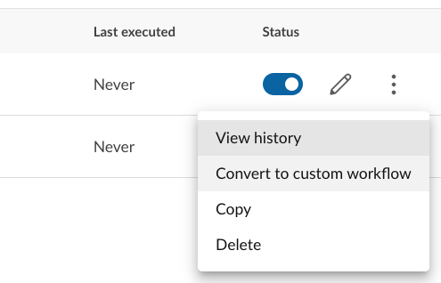
Upon completing the above steps you will be taken to the workflow designer for that workflow.
While users do not need to know how to program in order to edit an advanced workflow, they do require users to be comfortable with simple concepts, such as:
- Controlling the flow of a workflow using conditionals
- Specifying when workflows should run by customizing the workflow's triggering event
- Chaining actions together to perform desired operations
Limiting the frequency of workflows
There are a number of scenarios in which one would like to limit how frequently a workflow is run. Consider the circumstance where one is on vacatation and has set up an auto-response saying, "I am on PTO and will reply to your message on [insert date]." Let's then say a customer begins texting them multitple times. They may only want to reply once per day to tell them that they are on PTO. That will help me save money, as every SMS message sent may come with a small cost, and it keeps the conversation with the customer clean.
To limit workflows in this way, to control how often they are run in response to a given event, look for the following option found by editing a workflow, or by editing the trigger associated with a custom workflow.
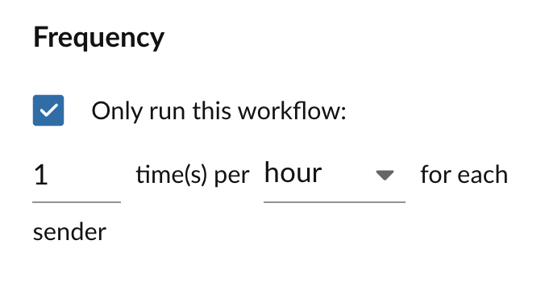
Any limit you set will apply within the context of a given individual you are communicating with. For example, you can limit a workflow to run once per day per phone number. This means that if multiple people are texting you from multiple phone numbers, they will each receive your autoreply only once per day.
Enabling and disabling workflows
As soon as a workflow is created you will be prompted to enable the workflow. Once the workflow is enabled, it will begin receiving and responding to events that trigger its execution.
Being able to quickly toggle a workflow on and off allows you to preserve the workflow without deleting it so that you can better manage it without necessarily deleting the underlying logic.
Bear in mind, workflows must be disabled in order to be edited. Therefore, while you are editing a workflow, the workflow will not be responding to events.
If you find that you are unable to enable a custom workflow using the drag-and-drop editor, make sure there are no blank/empty nodes within the workflow. This can happen when you add a conditional node, but not all conditions result in an action being processed.
Workflow histories
Every execution of a workflow is recorded for audit trail purposes. This allows you to see a history of when your workflow was triggered and executed, with some limited insights into what happened when the workflow was executed.
For purposes related to data privacy and security, you will see limited data relating to data that triggered the workflow. If you would like to see more data in your execution history, use the "Comment" action in your workflow to log more data to the execution history.
Histories are only maintained for seven days
Workflow histories are only retained for seven days and exist primarily to help users troubleshoot and debug workflows they have created. RingCentral may retain a history of the workflow having run in different forms, e.g. the message store and a user's call log.
Why is my workflow history empty?
A history record is only created if the triggering event passes through all of the attached filters of the workflow's trigger. In other words, if you have a workflow that is triggered by a missed call event, and a filter has been applied to that trigger that says, "only process this event if the caller's phone number does not start with '888'," then the workflow will only run if the caller's phone number does not start with 888. So while there was an event that was received by Workflow Builder, the workflow was never executed because the caller's phone number did not meet the trigger's filtering criteria.
Testing and simulating workflows
To assist users in producing workflows that they are confident will address their needs and use cases in all their various forms, Workflow Builder allows users to test the workflow by simulating a triggering event.
To test a workflow, click the "Test" or "Save and test" buttons when editing the workflow. You will then be prompted with a form that lists all the variables within the workflow that can impact the workflow's execution. Fill out this form, and click "Simulate" to see a summarization of the simulation, and to see what logical path the workflow followed.
Embedding variables or performing text substitution in SMS messages
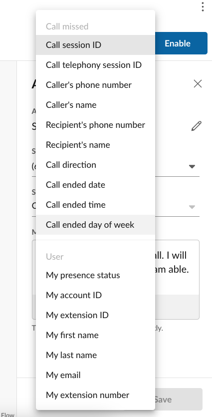
One can easily personalize or customize the contents of any text field in Workflow Builder using variables. Variables are tokens that will be replaced with an actual value at the time the workflow is executed. For example, suppose you wanted an SMS out-of-office autoreply to be more personal, addressing the sender by name. You could do that using the following text:
I am sorry {trigger.sender.name}, but I am OOO.
Keeping track of all the variables might be tough. So, in any text box, type the hashtag/pound character, #, and a pull-down menu will appear allowing you to select the varibable to insert.
The variables available to you depend upon the trigger your workflow is using, as well as any actions that might have preceeded the one you are editing. For a complete list of all variables, and their meaning, consult the actions and triggers in your specific workflow.
Creating custom workflows using Workflow Builder
Share your workflow
Have a workflow you love? Export and share it with the community as a recipe.
Custom workflows and workflows are intended for power-users who wish to define more complex logic, rules and conditions than Workflow Builder's ready-made templates may provide out of the box. While it is the goal of Workflow Builder to enable any user to create a custom workflow, some may wish to enlist the help of someone more technical to consult on the creation of a custom workflow, especially if the creation of rules and specification of actions is something they are not comfortable with.
Editing workflows
Adding and removing a node in a workflow
Nodes are added to a workflow by clicking the "+" icon located between nodes. At any of these locations, conditionals and action nodes can be inserted.
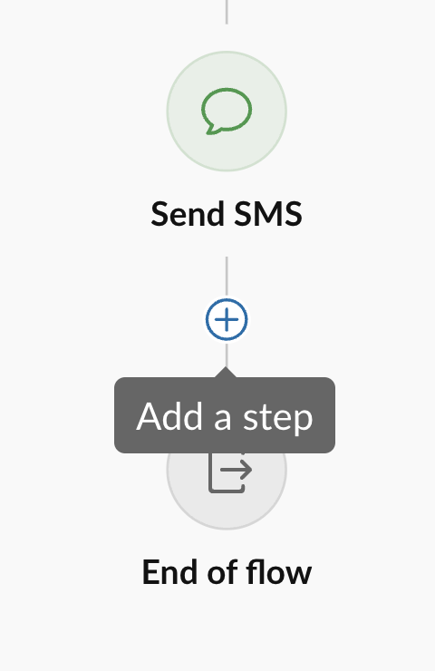
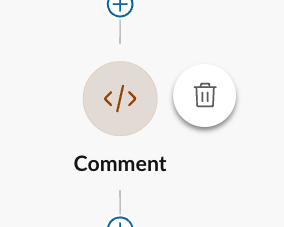
Selecting an action to add to a workflow
When adding an action, you will be given a chance to select from a list of available actions. Select the action you want to add and click "Add."
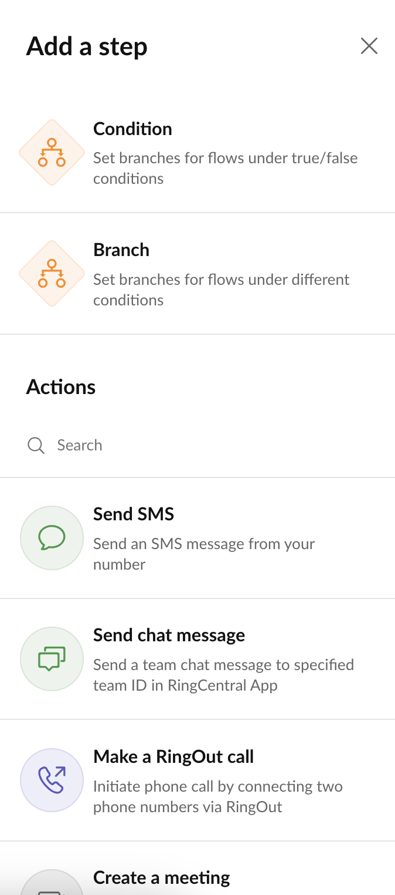
Why are some action's disabled, or greyed-out?
From time to time you may find an action listed that is disabled and cannot be added to a workflow. This is due to the feature associated with that action not being abled for your account. The most common scenario for this are actions related to sending SMS because in order to send SMS messages, users must go through what is often a multi-step approval and setup process with RingCentral and carriers to fully enable SMS for an account.
Customizing a workflow template
One of the most common ways used to create a workflow is to create a workflow from a template, and then customize it by converting it to a "custom workflow." This has the advantage of starting from a place known to be fully tested and functional, and then customizing it sometimes in small, but impactful ways. It can save a lot of time from building a workflow from zero.
Building a custom workflow from scratch
Sometimes there is no template that serves as a good starting point. When this happen, you can start with a blank canvas by clicking "New workflow" and selecting the "Build your own workflow" option. You will then be prompted to select the triggering event, and then you will be taken a blank workflow into which you can begin adding actions and conditionals.
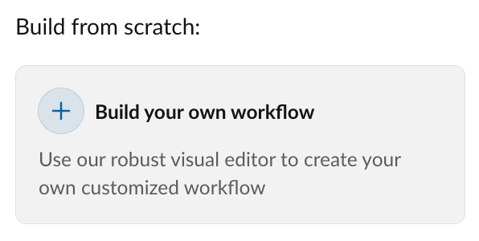
Admin Guide
Introduction to Workflow Builder administrative features
Account administrators have the ability to perform a number of functions regular users can't to enable them to more effectively assist co-workers with their automations, and manage workflows on behalf of the company. These features include:
-
Create and manage workflows on behalf of your coworkers.
-
Create call queue and IVR workflows
Create workflows for non-user-based extensions.
-
Easily copy and enable any workflow to any user or extension.
-
Access features that let you send SMS from any phone number in the company.
How to become a Workflow Builder administrator
There are two ways to become a Workflow Builder administrator:
- Have someone make you the company's Operator or "Auto-receptionist."
- Be assigned the “Super Admin” role in the Admin console.
Super Admins will have the ability to manage the following extension types:
- User
- Call Queue
- Voicemail
- Park Location
- IvrMenu
Auto-receptionists will have the ability to manage the following extension types:
- Call Queue
- Park Location
- IvrMenu
Managing workflows across your company
The most used administrative feature is the ability for account Super Admins to create, edit and manage automations for other users. The empowers IT administrators, executive assistants and others to help a coworker, or step in as needed to make necessary edits or changes to the workflows that power a company.
You will know if you are an administrator if you see the "Company workflows" tab on the Workflow Builder home screen.
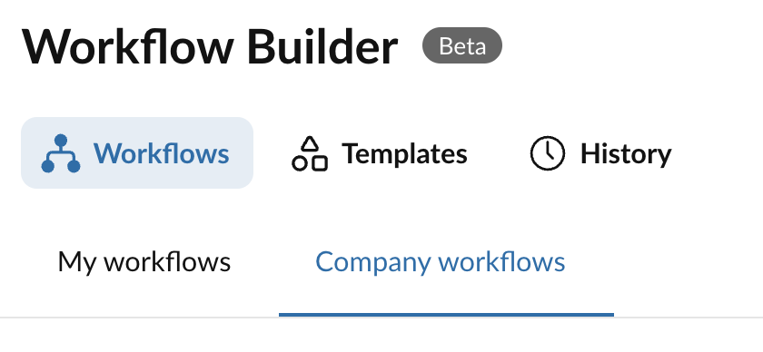
Editing an existing workflow
To edit another user's workflow, browse the list of workflows under the Company workkflows tab.
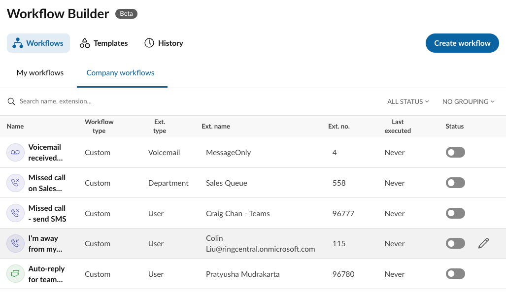
Grouping workflows to assist in navigation
It may be helpful to use the grouping mechanism on the table listing to more quickly find the workflow in question. Admins can group workflows by:
- Extension
- Extension type
- Trigger type
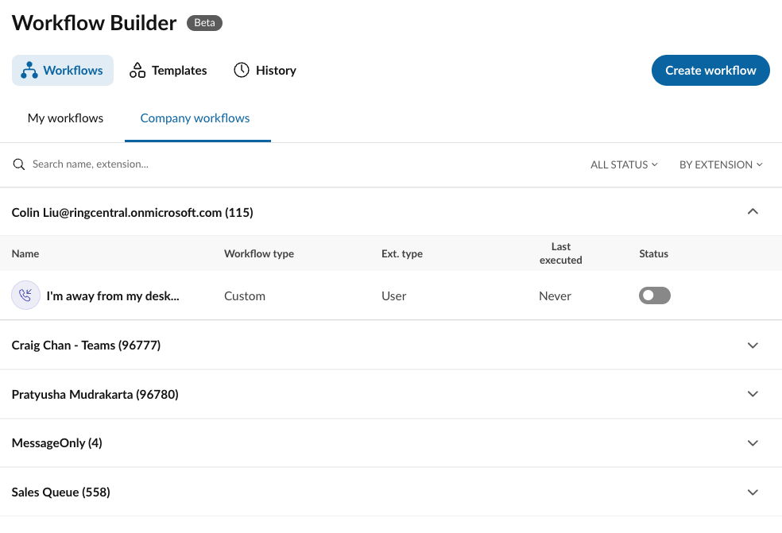
Adding a workflow
To create a workflow for another user or extension, start from the "Company workflows" tab, and click "Create workflow." Then choose to create the extension not for yourself, but for an extension. Search for the extenion or person's name. Then click "Next."
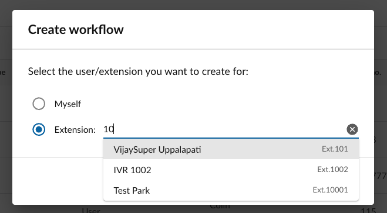
Managing workflows for call queues and other extension types
Workflow Builder can create workflows for users and non-user-based extensions such as:
- IVR menus
- Call queues
- Message-only
This allows Workflow Builder to address common use cases such as the following:
- Sending an SMS when a call is not picked up from a call queue
- Sending an SMS when someone navigates an IVR menu
Creating and editing workflows for non-user-based extensions is the same as managing workflows for normal users. We suggest the following to help make this process easier:
- Group workflows by extension or extension type
- Use descriptive names for your call queues and other extensions
Only most recent ten users will be displayed
During the beta, only the most recently added ten users will be listed in your list of users/extensions. If you have more than ten active users, they are still in the system, and their workflows will continue to run even if they are not in your list of users. You may always add them back to your list of users if you need to view or manage their workflows on their behalf.
Tips for managing non-user-based workflows
Creating workflows for other users is very intuitive as they tend to behave as we expect, as phone systems are by-default somewhat human-centric. Non-user workflows on the other hand require some finesse as there exist call routing nuances unique to these types of extensions.
Runners, and overriding what phone numbers and resources are available
For Call Queue, Voicemail, IvrMenu and Park Location extension types, workflows are run on behalf of the person who created the workflow by default. In other words, if you were to inspect your company’s audit trail, the creator of the workflow would be seen as the user who performed the actions within the workflow.
Administrators have the ability to specify another user to run a workflow on behalf of. This may give one workflow access to features and phone numbers they might otherwise not have access to. This is especially helpful you want to receive an SMS from one phone number, and respond to the SMS from another phone number, or sending SMS from the main company number.
- Learn more about modifying the runner of a workflow
Not all events fire for all extension types
There is some nuance in understanding what events are fired for what extension types, as how we often think about these things differs from what happens from a networking perspective. For example:
-
IVR menus: only the call received and call ended triggers are supported. The missed call event is not supported for IvrMenu.
-
Call queues: call queues only "miss" a call if the person hangs up while on the call queue. If no one picks up a call on a call queue and the call is routed else where, the call is technically not "missed" - it is in fact connected successfully somewhere else.
Copying workflows
Any user can make a copy of a workflow that they own/created. Admins have the exclusive ability to copy workflows to another user's account. This ability is useful when needing to deploy the same workflow in a standardized way to a relatively large number of accounts or extensions.
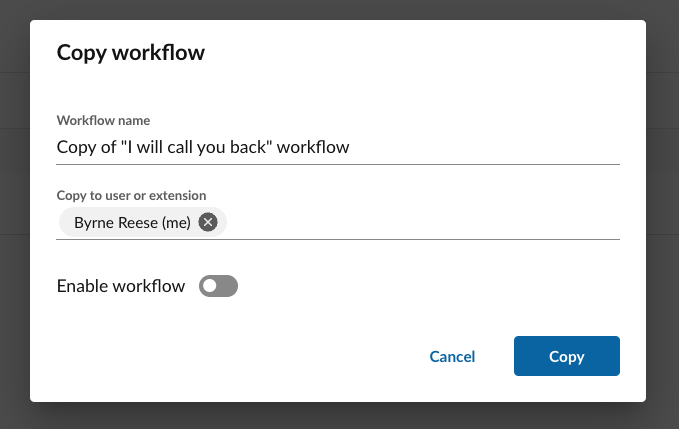
Modifying the runner of a workflow
Workflow Builder allows for admins to create workflows on behalf of others. These workflows, or any workflow for that matter, distinguishes between two key roles related to each workflow. They are:
-
Owner. The owner of the workflow determines under which user or extension the workflow is listed. This helps primarily with the organization and categorization of workflows.
-
Runner. The runner of the workflow is the identity through which the workflow is executed. This primariy affects the audit trail within RingCentral. For example, let's say there is a workflow that sends an SMS. If that workflow is executed using Jane's identity, then the audit trail will show that Jane sent the SMS messages triggered by that workflow.
Workflow Builder allows only Super Admins to modify the runner of a workflow associated with a user in their account. This is done either by editing the workflow template, or by editing the trigger associated with an advanced workflow.
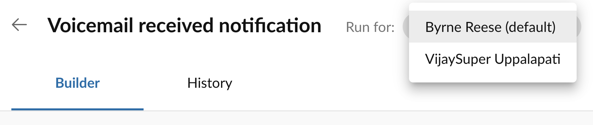
Admins can set the runner of a workflow according to the following constraints:
- Extensions of type User can be run on behalf of any Super Admin or the workflow's owner.
- Extensions of type Call Queue, Voicemail and Park Location can be run on behalf of any Super Admin or the Operator extension.
The runner of a workflow can only be assigned to accounts that have been activated by someone logging into that account.
Templates & Recipes
Workflow templates and recipes
Both templates and recipes provide Workflow Builder users an easy way to get a new workflow up and running quickly. Templates are built-in to Workflow Builder and allow users to create and edit a workflow via a simple form. Recipes on the other hand are workflows that have been exported by another user and shared with the community. Recipes can be imported into your account as a custom automation.
Templates
Workflow templates are pre-composed workflows designed around common use cases and situations. They provide users, especially less technical ones, with an intuitive and simple way to setup and configure common workflows.
Workflows created from a template only require users to fill out a simple form in order to create a new workflow. The same form can be used to edit the workflow as well.
To create a workflow from a template, navigate to "My workflows" or "Company workflows" (if you are an admin), and click the "New workflow" button. This will take you to a screen where you select a template to create a workflow from.
-
Reply to an SMS when you are out of the office, on vacation or away.
-
Craft an SMS response to incoming messages containing specific words or phrases.
-
Let people know that you missed their call because they called during non-business hours.
-
Let a caller know you received their voicemail.
-
Send yourself an SMS with a transcription of any incoming voicemail.
-
Send a response when someone contacts you via SMS looking for help.
Recipes
Share your favorite workflow recipe with the community
We would love to learn more about your favorite workflow, and how it has positively impacted you. Please consider exporting your most useful recipe and sharing it with us, so that we can publish it and so that others might benefit from it as well. Share your recipe via Github »
A number of our most common workflows that work right out-of-the-box are available via a workflow template. Other workflows may be less common, but no less important.
What follows are a set of simple workflows that you can think of as building blocks. Each recipe can stand on its own, but can also be combined with other recipes to make highly customized workflows that more precisely meet your needs. Use recipes to learn how to solve common problems workflow designers may have.
-
Team Messaging Out-of-office autoreply
Let coworkers know in RingCentral app that you are out of the office.
-
Send an SMS to users only once
Send an SMS auto-reply the first time someone contacts you.
-
Automatically respond via SMS to customers who leave a voicemail.
-
Send an SMS auto-reply the first time someone contacts you.
-
Send an SMS in response to someone if your presence status is anything but "available."
-
We don't reply to SMS autoresponse
Reply to every SMS you receive letting people know, "we don't reply to SMS, pleae call."
-
Reply to specific keywords to acknowledge receipt of specific opt-in/opt-out requests.
-
Send a copy of all incoming SMS to another phone number.
Tips and tricks
While not recipes you can download and install, these articles address common needs from customers.
-
Send an SMS from a call queue's phone number.
-
Triggering workflows from IVR menus
Learn how you can trigger a workflow when a user navigates an IVR menu.
-
Creating workflows for call queues and more
Learn how to setup a workflow for non-user-based extensions, e.g. voicemail boxes, IVR menus, call queues and more.
Templates
After-hours SMS auto-reply
This workflow will help respond to SMS messages received outside of regular office hours. In the template you specify your company's office hours, or the time during which they will reply to messages. If any message is received outside of these specified hours, the specified message will be sent.
Tips and troubleshooting
- Pay close attention to the timezone your workflow is associated with. This setting can be modified in RingCentral's admin console. See "timezone" below.
- Pay close attention to the setting of AM/PM for the times selected for your office hours.
Configuration parameters
| Parameter | Description |
|---|---|
| Timezone | The timezone in which time calculations will be made. This is a read-only field within Workflow Builder. The value of this field is set within the RingCentral admin console. Click the gear icon to modify this value, then refresh the value when you return to Workflow Builder. |
| When if your office open? | Specify the hours your office is open. If texts are received outside of these hours, the auto-response will be sent. |
| Enable this workflow for what phone numbers? | The list of phone numbers for which to enable this workflow. |
| Auto-reply text | The message to respond with. |
SMS keyword auto-reply
This workflow template will help users compose specific messages in response to SMS messages they receive that contain special keywords. Users can select multiple keywords or phrases. If these keywords or phrases are present (case-insensitive) any where in the received text, then the specified response will be returned.
Configuration parameters
| Parameter | Description |
|---|---|
| Keyword | One or more keywords or phrases. Click the "+" icon to add more keywords. |
| Enable this workflow for what phone numbers? | The list of phone numbers for which to enable this workflow. |
| Auto-reply text | The message to respond with. |
Out-of-office SMS replies
This workflow template is intended to use temporarily while one is away from the office and unable to respond to incoming SMS messages. It is great solution when you are on holiday or ill.
When any text is received at the phone numbers identified in the "enable this workflow for what phone number" field, the specified text will be sent to the sender of the text you received.
Configuration parameters
| Parameter | Description |
|---|---|
| Start day | The day to begin sending the response. The day begins at 12:00am. |
| End day | The day to stop sending the response. The day ends at 11:59pm. The workflow will be disabled at the same time. |
| Enable this workflow for what phone numbers? | The list of phone numbers for which to enable this workflow. |
| Auto-reply text | The message to respond with. |
When the end date arrives, this workflow will be disabled automatically.
Help request auto-response
This workflow will send an SMS in response to anyone texting the word "help" to the designated number. This workflow's default text relates to the keywords used for opting in and out of SMS messages. However, users are free to customize this message to include a mention of business hours, or other pertinent information that people often inquire about.
Configuration parameters
| Parameter | Description |
|---|---|
| Enable this workflow for what phone numbers? | The list of phone numbers for which to enable this workflow. |
| Auto-reply text | The message to respond with. |
Voicemail auto-response
This workflow will send an SMS to someone who leaves a voicemail confirming the receipt of a voicemail. You can optionally disable this workflow if the person who leaves the voicemail is a co-worker.
Configuration parameters
| Parameter | Description |
|---|---|
| Enable this workflow for what phone numbers? | The list of phone numbers for which to enable this workflow. |
| Select the phone number your SMS will be sent from | The phone number from which the auto-response will be sent. |
| Auto-reply text | The message to respond with. |
| Do not send an auto-reply to people in my company directory | When checked, then this workflow will only send replies to people outside of your company directory. |
Voicemail received notification
This workflow will help users stay up to date with people leaving them voicemail. Whenever a person receives a voicemail, a summary of the voicemail along with a transcription will be sent to the receipient of the voicemail.
Configuration parameters
| Parameter | Description |
|---|---|
| Select the phone number your SMS will be sent from | The phone number from which the auto-response will be sent. |
| To phone number | Select a phone number, or enter one manually, where you would like the notification message to be sent. |
| Notification text | The message to respond with. |
Recipes
Send an SMS when you miss someone's call
Sometimes we are not at our desk when someone calls us, or we are speaking to another customer. In these moments, we want to reassure customers that we will get back in touch as soon as we can.
This workflow template responds to any missed call with a simple SMS message that is sent to the person who called.
Delivery of SMS is not guaranteed
Please bear in mind that only phone numbers capable of receiving SMS will receive a response. If you miss a call from someone who called from a non-SMS-enabled phone, then they are unlikely to get your auto-reply.
Be aware of consent
Don't forget, sending an SMS message to someone who has not provided consent is not permitted. This recipe sends an SMS auto-reply for every missed call, whether or not the recipient has provided that consent.
Learn how to import it into your account.
Creating workflows for call queues, IVR menus and voicemail-only extensions
To key to becoming a Workflow Builder expert lies in understanding how your account has been configured to route and handle calls. Lets suppose one wants to implement the following workflow: when a customer calls the main company number, if the call is missed, then I want to send the customer an SMS."
It is entirely logical to think that to enable the above workflow, one needs to bind a workflow to the main company number. However, if your call handling rules route incoming calls to a call queue for example, or an IVR menu, then the correct course of action is to bind your workflows to those extensions -- and not directly to the main company number.
A simple and effective trick is to create a simple diagram of your company's phone tree and call routing rules. Once you are able to visualize where calls are ultimately routed, then it becomes much easier to know which extensions to bind and setup workflows for.
Forward all SMS
The Forward All SMS recipe is a foundational workflow template designed to demonstrate how incoming SMS content can be automatically redirected to another destination. When active, this workflow intercepts every SMS received by your specified number and sends a copy of that message content to a secondary phone number.
This is particularly useful for ensuring that urgent client communications are not missed when you are away from your primary device or need to delegate message monitoring to a colleague.
How it Works
When an SMS is received, the workflow captures the message body and the sender's information. It then initiates a new SMS task to "forward" that information to the target recipient.
Operational Considerations
Because this workflow is designed to forward ALL incoming messages, users should manage its activation carefully:
- Manual Control: You must manually enable the workflow when you want forwarding to begin and disable it when it is no longer needed.
- Time-Based Logic: For a true "Out-of-Office" scenario, it is recommended to modify the imported workflow by adding a Time Condition step to ensure it only executes between specific start and end times.
Important Limitations
It is vital to understand the technical behavior of SMS forwarding versus traditional call forwarding:
- Sender Identity: Unlike a forwarded phone call, a forwarded SMS does not "spoof" the original sender's number. The recipient will see the message as coming from your phone number, not the original sender.
- Replying: If the person receiving the forwarded message wishes to reply to the original sender, they cannot simply hit "Reply." They must manually compose a new message to the original sender's phone number.
- Loop Prevention: Ensure you do not forward messages to a number that is also configured to forward back to you, as this can create an infinite loop of messages.
Scaling Your Solution
If your goal is to have multiple people monitor and respond to the same set of incoming text messages, a simple forwarding workflow may not be the best fit.
For team-based collaboration, consider RingCentral’s SMS Call Queue feature (available as part of the Customer Engagement Bundle). This allows a group of users to share a common SMS identity, see conversation history, and reply collectively without the limitations of individual message forwarding.
Sending an SMS to users once, and only once
Let's say you want to set up an SMS autoresponse that is triggered whenever a new customer messages you for the first time. Perhaps you want to welcome them as a new customer, or perhaps you want to send them a disclaimer. Whatever the circumstance, we can achieve this through a workflow that utilizes the following logic:
- Whenever you receive an SMS, look up the sender's phone number in your address book.
- If a contact is found, then do nothing.
- But if a contact is not found, then we can assume this is the first time they have messaged us.
- Go ahead, and send your auto-reply message.
- Finally, add the phone number to your address book so that the next time they send a message, they will short circuit the workflow and prevent it from messaging them again.
Learn how to import it into your account.
Send SMS messages from a call queue
Many RingCentral customers ask: "How can I send SMS messages from my call queue number?" or "Why can’t my team text customers using our main business number?" If you use a call queue phone number for customer-facing communications, being able to send text messages (SMS) from that same number is essential for consistent branding, seamless customer experiences, and effective team collaboration.
This article explains what you need to know and where to go to configure SMS for call queues in RingCentral, including how to assign a recipient so messages can be managed properly—especially when using automated workflows in Workflow Builder.
Why You Might See Issues Sending SMS from a Call Queue
Out of the box, RingCentral call queues are designed for voice routing, not SMS. So when you try to send a text from your call queue number, you may notice:
- SMS messages fail to send
- Responses are missed or not routed to the right team member
- Workflow Builder automations that depend on SMS triggers or actions don't work as expected
The root cause? The call queue number isn’t set up to allow SMS or doesn’t have an assigned SMS recipient. Without this step, RingCentral doesn’t know who should send and receive texts on behalf of that number.
How to Enable SMS for a Call Queue Number
To enable SMS on a RingCentral call queue number, you’ll need to assign an SMS recipient in the Admin Portal or RingCentral App. Once done, SMS messages sent to the call queue number will go directly to the designated user or group. This also enables workflows in Workflow Builder that use SMS actions to function correctly.
We won’t repeat the full instructions here, but RingCentral’s official guide walks you through every step:
Use Cases Supported by This Setup
- A support team wants to send order updates from a single shared business number
- A sales queue needs to follow up with leads via SMS after missed calls
- A workflow automation sends appointment reminders using a call queue’s number
Tip for Workflow Builder Users
Once your call queue has an assigned SMS recipient, you can use Send SMS actions in Workflow Builder with that number, enabling powerful automation like:
- Sending automated replies when a customer texts in
- Notifying a team member via SMS when a voicemail is left in the call queue
- Triggering an SMS after a specific call queue event
Summary
To send SMS from a call queue number in RingCentral or use that number in Workflow Builder, you must assign an SMS recipient to the queue. This unlocks messaging features and improves how your team communicates with customers.
Acknowledge reciept of an opt-out or opt-in request via SMS
Opt-in and opt-out auto-replies is now supported in our core product
This recipe is for demonstration purposes only and is meant to illustrate a way of implementing auto-responses to specific keywords. If you are in need of this specific feature we strongly recommend you setup your RingCentral account accordingly.
This workflow is a good demonstration of how you can setup Workflow Builder to acknowledge the reciept of messages that contain specific keywords. It models the use case of sending SMS auto-replies in response to receiving specific commands or keywords. In addition, it demonstrates how to augment a contact record in RingCentral with a note to keep a record of the received correspondence.
Once you install the recipe, if you wish to customize the keywords this workflow will respond to then edit the appropriate conditional elements relating to keywords in the advanced workflow.
As a final reminder, RingCentral does not recommend using the recipe as-is. SMS opt-in and opt-out auto-responses are managed within our core product. Using this workflow will result in duplicated messages being sent and could increase your costs.
Learn how to import it into your account.
Sending an out-of-office auto-reply for team messaging messages
If you are going out of town, or taking a holiday and need to let your co-workers messaging you know, then it can be helpful to setup a workflow that will send an auto-reply via team messaging whenever someone "at-mentions" you in a team, chat or conversation. One challenge however is that when one posts a message to a team, the messages in that team are automatically marked as read. So imagine going out of town, and when you return seeing all of your messages as being read. How would you know what messages you need to reply to?
Enter the workflow below, which will post a second message to yourself with a link back to the original conversation, so that when you return to the office you have a reliable catalog of all the messages in which you were mentioned. That way you can reply to each of them, and ease your transition back into the workplace.
This recipe works like this:
- When you receive a chat message, it will look at the message received date to ensure it is receiving between two dates of your choice.
- It immediately posts an auto-reply message (once per day, per chat)
- It posts a message to your personal chat letting you know you received a message, linking to the team/chat to make it easier to find later.
Learn how to import it into your account.
Send an SMS to someone who just left you a voicemail
This workflow sends an SMS to someone who just called and left you a voicemail. This is a good way to notify them promptly that you received their voicemail and will respond shortly.
Delivery of SMS is not guaranteed
Please bear in mind that only phone numbers capable of receiving SMS will receive a response. If you miss a call from someone who called from a non-SMS-enabled phone, then they are unlikely to get your auto-reply.
Be aware of consent
Don't forget, sending an SMS message to someone who has not provided consent is not permitted. This recipe sends an SMS auto-reply for every missed call, whether or not the recipient has provided that consent.
Learn how to import it into your account.
Let customers know that you don't respond to SMS messages
This recipe is a great example of a workflow that responds to all incoming messages. In this particular use case, the intention is to reply to all incoming SMS messages in order to let the sender of the SMS message know that your company does not accept and/or reply to SMS messages, and to instruct them to call a phone number instead.
Technically, this workflow could be used to reply to all incoming SMS messages with an arbitrary message of your choice. This is because at its core this workflow is simply and without much discrimination, replies to all incoming SMS messages with the same static message.
Learn how to import it into your account.
Reference
Triggers
The creation of all custom workflows begin by selecting the event that will trigger the workflow to be executed. When customizing a workflow trigger, users can specify filtering conditions for the workflow, which dictate the circumstances under which a workflow will be executed. Users can specify whether all conditions must be met, or whether any (one or more) conditions must be met.
Index of all triggers
Limiting the frequency of a workflow
Users can also limit how often a workflow will be run for any given triggering event. For example, suppose you are creating an SMS auto-reply, to notify someone that you are out-of-the-office. In such circumstances, you wish to only send an auto-reply once per day regardless of how many times a given individual may send you an SMS in a 24-hour period.
Each workflow has a way to limit the frequency of its execution based upon the person triggering the event. Look and read carefully when editing a trigger to see how its execution can be throttled.
Variables added to a workflow's context by a triggering event
Each triggering event has metadata associated with it that will help govern how the workflow will function. This metadata is accessed within the context of a workflow via "trigger variables." For example, you may want to build a workflow that performs different functions depending upon the content of an SMS message that was received. The event associated with this is SMS received and the trigger variable would be "message text."
Consult the documentation for each trigger to see what variables it adds to the workflows context.
See: Variables
Administrator options
Running a workflow on behalf of another user
Administrators have the exclusive ability to modify which user a workflow is executed on behalf of. This ability is especially useful when a user wants to send SMS from a phone number that belongs to another user. Given that users can only send SMS from the phone numbers assigned to them, this allows a user to send SMS from a phone number they may otherwise not be allowed to.
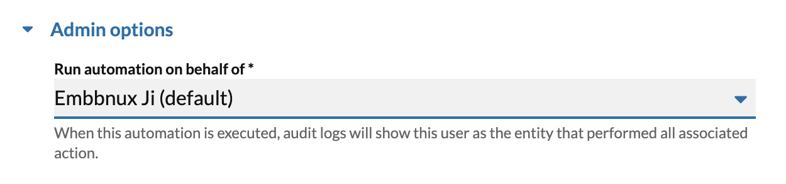
The same concept applies across the board. When you run a workflow on behalf of another user, you can perform any action that the user is permitted to do, even if the owner of the workflow doesn't have that ability themselves.
One can modify this setting by editing the trigger node associated with a workflow.
Flow control
Conditional and switch nodes within a workflow provide users with a way of forking the flow of their workflow based upon a set of rules they define. For example, you may wish to send different SMS messages to someone contacting based upon their area code, or some other criteria. To create logic like this, one must first add a conditional node to their workflow, and then populate the different paths of that conditional node with the actions they want to execute within that logical pathway.
There is no limit on the number of conditions a workflow can contain, and conditions can be nested as well, allowing for the formulation of more complex logical pathways.
Using variables to control the flow of a workflow
You may find when defining the conditions of a conditional node different types of varibales around which a rule can be built. These types are utilized to help users in finding the right variable to test. These variable types are:
-
Trigger variables. These variables related to the event that caused the workflow to be executed. This may contain for example the phone number of the person who may have sent an SMS message that in turn triggered the workflow.
-
User variables. These variables relate to the person who owns the workflow, or on whose behalf the workflow is being run. This can be useful if you want to build a rule based upon whether or not the current user's status is set to "do not disturb."
-
Action variables. These variables relate to the variables added to the workflow in response to another action previously being executed. For example, you may wish to generate a transcription using an action, then respond different based upon the content's of that transcription.
List of available nodes
Workflow actions
A workflow's actions is what makes a workflow do something. Without actions, workflows are completely inert.
Action inputs
Each action requires input to function properly. These inputs govern what the action will do specifically within the general constraints of the action. Who will I send the SMS to? What number will I send an SMS from? What will be the message? And so forth...
Action outputs
Some actions also produce output. Output within the context of an action means that the action will add "action variables" to the current workflow's context, making those values accessible to subsequent actions.
A good example is the transcribe action. As input you reference a URL to a media file. When it is done executing, it adds the "Transcript" variable to the workflow's context, allowing you to reference the transcript later to send the transcript in an SMS, or to build conditional logic based upon the contents of the transcript.
List of available actions
Supported in Automator only
The following nodes are currently only supported in RingCentral Automator, Workflow Builder's predecessor.
Using variables in a workflow
Types of variables
Variables are sometimes divided into different categories to facilitate selecting, finding and referencing the correct one within your workflow. These categories include:
Trigger variables
These are the primary set of variables users will interact with. They refer to the variables that contain information that accompanied the event that triggered, or initiated the execution of the workflow. For triggers relating to SMS messages for example, this may include the phone number that sent the SMS, or received the SMS, or the SMS message itself. Each trigger inserts its own set of variables into the current workflow's context.
Action output variables
These variables are not present when the workflow is first executed, but are instead added to the workflow as the result of executing an action. It can sometimes be helpful to think of these variables as an actions output.
User variables
These variables are present in every workflow and contain values associated with the user executing the workflow. This includes the user's name, phone number, and so forth. User variables include:
- My presence status
- My extension number
- My extension ID
- My account ID
- My first name
- My last name
- My email
Usage
Referencing variables
Variables can be referenced in any text field within Workflow Builder. They are ideal for use within the large text input boxes for an SMS message, or chat message.
If you do not know the exact name of the variable you are looking for, type a "#" (pound-sign) into any text box and small help popup will appear to help you select the right one.
Setting variables
Variables are often created implicitly by a node. In some circumstances a workflow designer may wish to explicitly declare/create variable on their own. The following nodes enable this.
Triggers
Trigger: call ended
This event is fired when the current user disconnects from a phone call, thus ending the current telephony session, for any of the phone numbers or extensions for which they are assigned or associated.
Call end reason for outbound calls
You may notice a trigger variable called "Call end reason." However, the value of this property is always "No Reason." The reason a call end reason for outbound calls is difficult or impossible to determine. For example, RingCentral knows when an inbound call ends because a voicemail was received, but we don't know if the caller left a voicemail in someone else's system. We hope to improve upon this in the future. In the mean time, do not rely upon or use the "Call end reason" attribute for outbound calls.
Trigger variables
| Trigger variable | Type | Description |
|---|---|---|
| Call session ID | String | |
| Call telephony session ID | String | |
| Call direction | String | Possible values: "Inbound" and "Outbound." |
| Caller phone number. | Phone number | The phone number that initiated the phone call. |
| Caller name | String | The name of the caller as stored in your company directory or personal address book (if available) |
| Recipient's phone number | Phone number | The phone number that received the phone call. |
| Recipient name | String | The name of the call recipient as stored in your company directory or personal address book (if available) |
| Call missed | boolean | True if the call was missed. See also: call missed trigger |
| Call ended date | date | The date the call ended, in the format of YYYY-MM-DD. |
| Call ended time | time | The time the call ended, in the format of HH:MM:SS (AM|PM) |
| Call ended day of week | day of week |
Trigger: missed call
This event is fired when a call comes into an extension, but is never answered or picked up.
- Voicemail-only extensions do not fire the missed call event, because no call that comes into a voicemail extension is ever missed - they are instantly picked up and a voicemail message is played.
- Call queues fire the missed call event when a user hangs up while waiting for someone to answer.
- Some call queues are configured to transfer unanswered calls to another extension, like a voicemail box. If this is the case for you, then the missed call event will not be fired for these calls.
Trigger variables
| Trigger variable | Type | Description |
|---|---|---|
| Call session ID | String | |
| Call telephony session ID | String | |
| Call direction | String | Possible values: "Inbound" and "Outbound." |
| Caller phone number. | Phone number | The phone number that initiated the phone call. |
| Caller name | String | The name of the caller as stored in your company directory or personal address book (if available) |
| Recipient's phone number | Phone number | The phone number that received the phone call. |
| Recipient name | String | The name of the call recipient as stored in your company directory or personal address book (if available) |
| Call ended date | date | The date the call ended, in the format of YYYY-MM-DD. |
| Call ended time | time | The time the call ended, in the format of HH:MM:SS (AM|PM) |
| Call ended day of week | day of week |
Trigger: call received
This event is fired when the current user receives a phone call at any of the phone numbers or extensions for which they are assigned or associated.
Trigger variables
| Trigger variable | Type | Description |
|---|---|---|
| Call session ID | String | |
| Call telephony session ID | String | |
| Caller phone number. | Phone number | The phone number that initiated the phone call. |
| Caller name | String | The name of the caller as stored in your company directory or personal address book (if available) |
| Recipient's phone number | Phone number | The phone number that received the phone call. |
| Recipient name | String | The name of the call recipient as stored in your company directory or personal address book (if available) |
| Call received date | date | The date the call was received, in the format of YYYY-MM-DD. |
| Call received time | time | The time the call was received, in the format of HH:MM:SS (AM|PM) |
| Call received day of week | day of week |
Trigger: chat message received
This event is fired when the current user receives a chat message via RingCentral's unified messaging app. Please note that this trigger is not fired when a user sends a message to themselves.
Trigger variables
| Trigger variable | Type | Description |
|---|---|---|
| Team ID | String | A string for the unique ID of the team in which the message was received. |
| Message text | String | The text of the message. |
| Team name | String | The name of the team in which the message was received. |
| Chat type | String | Possible values: Team, Group, Direct, Personal, Everyone. See below. |
| Mention me | boolean | True if the message mentions the current user. False otherwise. |
| Message received date | date | The date the voicemail was received, in the format of YYYY-MM-DD. |
| Message received time | time | The time the voicemail was received, in the format of HH:MM:SS (AM|PM) |
| Message received day of week | day of the week |
Chat types
- Team. A chat defined by a topic. Members of the team may change over time.
- Group. A chat defined exclusively by its members. Adding a user to a group chat results in a new group chat.
- Direct. A message between two people.
- Personal. A special private chat a user can have with themselves. Good for receiving private notifications from other apps.
- Everyone. A special chat in which all users in an account are automatically made members.
Trigger: Fax received
This event is fired when the current user receives a fax via any of the phone numbers they have access to.
Viewing Fax Content
When a fax is sent or received, the associated trigger event includes a variable named Fax attachment URI. This variable provides a direct URL to the fax message media.
Direct Media Access
The Fax attachment URI variable contains the raw URL to the fax media file. For example:
https://media.ringcentral.com/restapi/v1.0/account/170xxx004/recording/6571972004/content
You can use this URL to directly access the fax content, which is typically in a format like TIFF.
Constructing a Viewable URL
To provide a user-friendly way to view the fax content directly in a web browser, you can construct a special URL using the RingCentral Media Reader. This reader is a web-based tool that can interpret and display various media types, including faxes.
To construct a viewable URL, prepend the Fax attachment URI with the RingCentral Media Reader URL:
https://ringcentral.github.io/ringcentral-media-reader/index.html?media=
Combining this with the Fax attachment URI results in a clickable URL like this:
https://ringcentral.github.io/ringcentral-media-reader/index.html?media=https://media.ringcentral.com/restapi/v1.0/account/170xxx004/recording/6571972004/content
By providing users with such a URL, they can easily click to open and view the fax content within their browser.
Trigger variables
| Trigger variable | Type | Description |
|---|---|---|
| Sender's phone number | Phone number | The phone number that sent the fax that was received in E.164 format. |
| Sender's name | String | If the sender exists in your address book, this variable will contain the name stored in your address book. |
| Fax read status | String | Whether or not the fax has been marked as read via the RingCentral application. Possible values: "Read" or "Unread" |
| Fax priority | String | Possible values: "Normal" or "High" |
| Fax attachment URI | String | The URL which a user can click to view the received fax within RingCentral. |
| Fax attachment content type | String | The content-type of the received fax. |
| Fax subject | String | The subject of the fax. |
| Fax resolution | String | The graphical resolution of the received fax. Possible values: "Low" or "High" |
| Fax page count | integer | The number of pages received. |
| Fax direction | String | Possible values: "Inbound" or "Outbound." |
| Fax received date | date | The date the message was received, in the format of YYYY-MM-DD. |
| Fax received time | time | The time the message was received, in the format of HH:MM:SS (AM |
| Fax received date time | timestamp | The combined date and time of a received fax, in the format of YYYY-MM-DD HH:MM:SS (AM |
| Fax received day of week | day of the week | The day of the week the fax was received. |
| Fax received localized date time | time | The combined date and time of a received fax, expressed in the user's preferred timezone. |
| Fax message status | String | This is always equal to "Received" for this trigger. |
| Fax sender's formatted phone number | String | A formatted version of the sender's phone number. |
Trigger: Fax sent
This event is fired when the current user send's a fax via any of the fax-enabled phone numbers they have access to.
Viewing Fax Content
When a fax is sent or received, the associated trigger event includes a variable named Fax attachment URI. This variable provides a direct URL to the fax message media.
Direct Media Access
The Fax attachment URI variable contains the raw URL to the fax media file. For example:
https://media.ringcentral.com/restapi/v1.0/account/170xxx004/recording/6571972004/content
You can use this URL to directly access the fax content, which is typically in a format like TIFF.
Constructing a Viewable URL
To provide a user-friendly way to view the fax content directly in a web browser, you can construct a special URL using the RingCentral Media Reader. This reader is a web-based tool that can interpret and display various media types, including faxes.
To construct a viewable URL, prepend the Fax attachment URI with the RingCentral Media Reader URL:
https://ringcentral.github.io/ringcentral-media-reader/index.html?media=
Combining this with the Fax attachment URI results in a clickable URL like this:
https://ringcentral.github.io/ringcentral-media-reader/index.html?media=https://media.ringcentral.com/restapi/v1.0/account/170xxx004/recording/6571972004/content
By providing users with such a URL, they can easily click to open and view the fax content within their browser.
Trigger variables
| Trigger variable | Type | Description |
|---|---|---|
| Sender's phone number | Phone number | The phone number that sent the fax (in E.164 format). |
| Sender's name | String | If the sender exists in your address book, this variable will contain the name stored in your address book. |
| Fax read status | String | Whether or not the fax has been marked as read via the RingCentral application. Possible values: "Read" or "Unread" |
| Fax priority | String | Possible values: "Normal" or "High" |
| Fax attachment URI | String | The URL which a user can click to view the fax within RingCentral. |
| Fax attachment content type | String | The content-type of the fax. |
| Fax subject | String | The subject of the fax. |
| Fax resolution | String | The graphical resolution of the fax. Possible values: "Low" or "High" |
| Fax page count | integer | The number of pages sent. |
| Fax direction | String | Possible values: "Inbound" or "Outbound." |
| Fax sent date | date | The date the message was sent, in the format of YYYY-MM-DD. |
| Fax sent time | time | The time the message was sent, in the format of HH:MM:SS (AM |
| Fax sent date time | timestamp | The combined date and time of the fax, in the format of YYYY-MM-DD HH:MM:SS (AM |
| Fax sent day of week | day of the week | The day of the week the fax was sent. |
| Fax sent localized date time | time | The combined date and time of the fax, expressed in the user's preferred timezone. |
| Fax message status | String | This is always equal to "Sent" for this trigger. |
Trigger: On-demand
The On-Demand trigger is designed for workflows that require manual initiation by a user within Workflow Builder (WFB). Unlike automated triggers that rely on system events or fixed schedules, On-Demand workflows are ideal for ad-hoc business processes.
When to use On-Demand workflows:
- Non-predictable schedules: Processes that occur as part of a manual program rather than at set intervals.
- Human-initiated automation: Tasks that require a human to decide exactly when the logic should execute.
- Ad-hoc maintenance: One-off data updates, specialized reporting, or system syncs that aren't tied to a specific external event.
The future of on-demand variables
Currently, on-demand workflows can only be executed manually from within Workflow Builder. In the future however, these workflows will be exposed through a REST API, invocable over MCP, and will be embeddable within other workflows.
In addition, today inputs and outputs are provided as raw JSON. In the future inputs and outputs will be collected and displayed in a more human-friendly and structured manner.
Inputs
When a user executes an On-Demand workflow, WFB prompts them to provide data based on the inputs defined by the workflow creator. This data is provided via a JSON data structure.
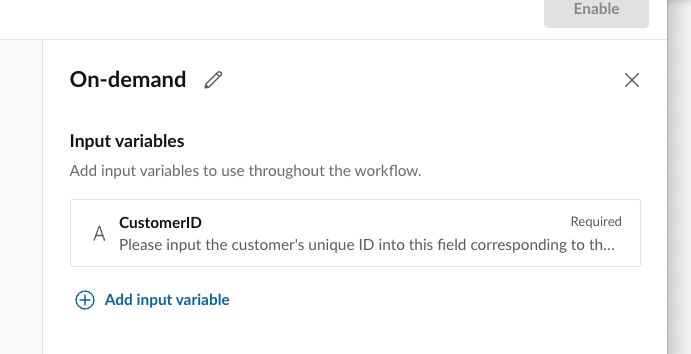
Supported Data Types
WFB validates inputs based on the following types:
| Data type | Description |
|---|---|
String |
Textual data. To ensure higher data quality, Strings support several sub-types for added validation: Plain Text, Email, URL, Phone Number, Selection (Drop-down choices), Date, Time, Timestamp |
Number |
Integer or decimal values. |
Boolean |
True/False values. |
Object |
Non-scalar values, typically presented as an associative array (key-value pairs) in JSON. |
Array |
A list of values or objects. |
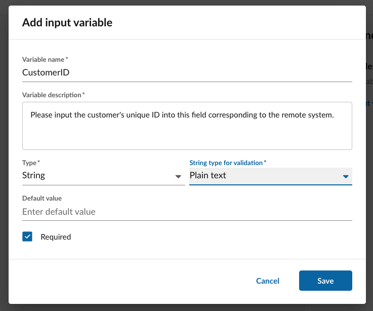
Outputs
Outputs can be defined similarly to inputs by clicking on the End node. The defined outputs will then be included in the workflows structured output layer allowing you to easily extract the data you require.
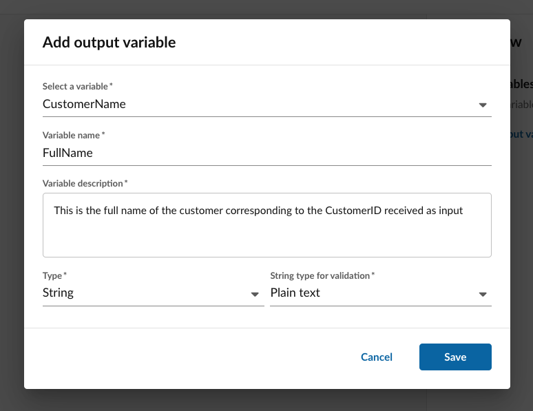
Execution
Executing an on-demand workflow is done from the workflow listing screen. One can click the "Run" button when hovering over an on-demand workflow.
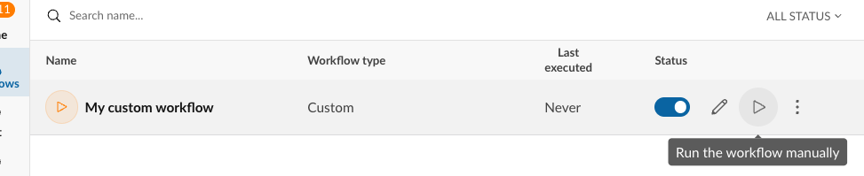
- Trigger: A user manually selects the workflow from the WFB interface.
- Data Entry: WFB prompts the user for the required inputs. The user provides these via the UI, which compiles them into the necessary JSON format.
- Processing: The workflow runs the defined logic using the provided inputs.
- Review: Upon completion, the user can view the JSON output and metadata directly in the WFB execution history to verify the results.
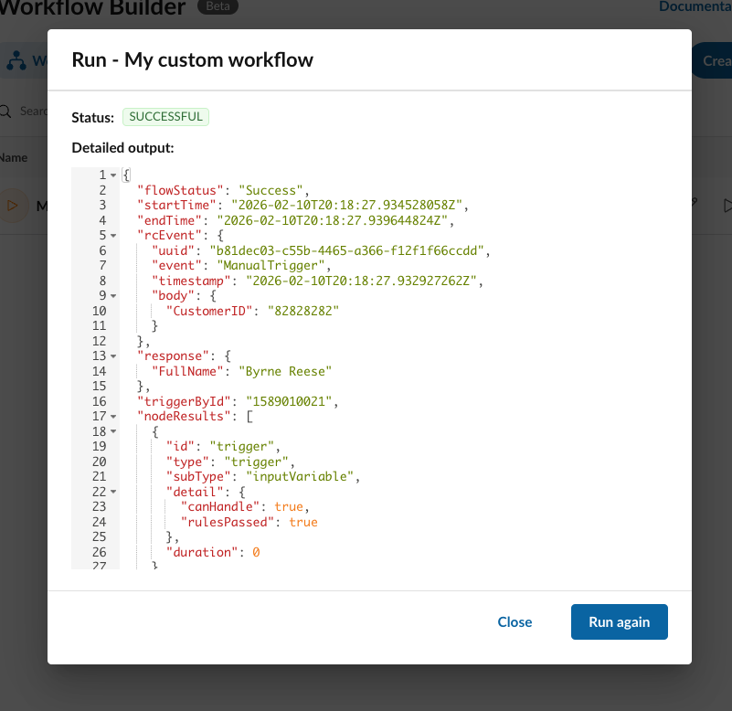
Sample execution output
{
"flowStatus": "Success",
"startTime": "2026-02-10T20:18:27.934528058Z",
"endTime": "2026-02-10T20:18:27.939644824Z",
"response":
{
"FullName": "Byrne Reese"
},
"rcEvent":
{
"uuid": "b81dec03-c55b-4465-a366-f12f1f66ccdd",
"event": "ManualTrigger",
"timestamp": "2026-02-10T20:18:27.932927262Z",
"body":
{
"CustomerID": "82828282"
}
},
"triggerById": "1589010021",
"nodeResults": [
{
"id": "trigger",
"type": "trigger",
"subType": "inputVariable",
"detail":
{
"canHandle": true,
"rulesPassed": true
},
"duration": 0
},
{
"id": "action-1770751293728",
"type": "action",
"subType": "setVariable",
"detail":
{
"success": true,
"parameter":
{
"variables":
{
"custom.variable1770751285304": "Byrne Reese"
}
}
},
"duration": 4
},
{
"id": "action-exit-1770751124589",
"type": "action",
"subType": "exit",
"detail":
{
"success": true
},
"duration": 0
}]
}
Executing on-demand workflows
Trigger variables
| Trigger variable | Type | Description |
|---|---|---|
| Sender's phone number | Phone number | The phone number that sent the SMS message that was received. |
| Sender's name | String | If the sender exists in your address book, this variable will contain the name stored in your address book. |
| Recipient's phone number | Phone number | The phone number that received the SMS. |
| Message text | String | The exact text of the received message. |
| Is image attached | boolean | True if the received SMS contained an image. |
| Message received date | date | The date the message was received, in the format of YYYY-MM-DD. |
| Message received time | time | The time the message was received, in the format of HH:MM:SS (AM |
| Message received day of week | day of the week |
Trigger: Scheduled
The Scheduled trigger is used for workflows that need to be executed automatically at a specific point in time or on a repeating basis. Unlike the On-Demand trigger, Scheduled workflows are entirely autonomous—they run without human intervention and cannot prompt a user for input at the time of execution.
They are analogous to cronjobs, serving as a reliable way to automate "set it and forget it" logic.
When to use Scheduled workflows:
- Periodic Communication: Sending recurring updates, stand-up reminders, or "Team Reminder" messages within chat channels.
- Future-dated Actions: Scheduling a message or task to be sent once at a specific future time (similar to a "latergram").
- Maintenance Tasks: Running routine data cleanups or system syncs at low-traffic hours.
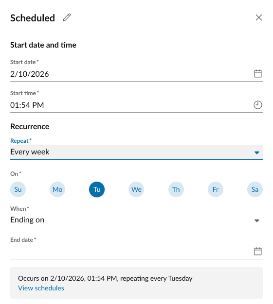
Configuration
Because Scheduled workflows must be autonomous, all logic and data must be predefined within the workflow steps. The execution timing is configured using the following parameters:
- Start Date/Time: The exact moment the workflow should begin its first (or only) execution.
- End Date: (Optional) The date after which the workflow will no longer execute.
- Recurrence: An optional setting to repeat the workflow at specific intervals:
- Frequency: Every Day, Week, Month, or Year.
- Termination: Recurrence can be set to end on a specific date or after a certain number of occurrences.
Inputs
Scheduled workflows do not support user inputs at runtime. All data required for the workflow to function must be:
- Hardcoded into the workflow steps.
- Retrieved dynamically from external systems (e.g., via an API call) during execution.
- Defined as static variables during the initial creation of the workflow.
Outputs
When a scheduled workflow completes, the execution is logged within the Workflow Builder history. While there is no "active" user to view the output immediately, the results are captured as JSON for administrative review:
- Execution Metadata: Includes the
execution_id,status(Success/Failure), and the precisetrigger_time. - Log Data: A record of whether the scheduled message or task was successfully delivered to the target destination.
Execution
The execution lifecycle for a Scheduled workflow is handled by the system's internal scheduler:
- Registration: The creator sets the schedule parameters and activates the workflow.
- Queueing: The system monitors the clock; when the designated time is reached, the workflow is placed in the execution queue.
- Autonomous Run: The workflow engine executes the steps using the predefined logic. No user interaction is requested.
- Logging: The system records the outcome in the WFB history for audit
Trigger: SMS received
This event is fired when the current user receives an SMS message via any of the phone numbers they have access to.
Trigger variables
| Trigger variable | Type | Description |
|---|---|---|
| Sender's phone number | Phone number | The phone number that sent the SMS message that was received. |
| Sender's name | String | If the sender exists in your address book, this variable will contain the name stored in your address book. |
| Recipient's phone number | Phone number | The phone number that received the SMS. |
| Message text | String | The exact text of the received message. |
| Is image attached | boolean | True if the received SMS contained an image. |
| Message received date | date | The date the message was received, in the format of YYYY-MM-DD. |
| Message received time | time | The time the message was received, in the format of HH:MM:SS (AM |
| Message received day of week | day of the week |
Trigger: voicemail received
This event is fired after a voicemail is left for an extension.
Transcribing voicemails
One can use the transcribe action to transcribe the voicemail's media file and add the transcription text to the current workflow's context.
Trigger variables
| Trigger variable | Type | Description |
|---|---|---|
| Sender's phone number | Phone number | The phone number that sent the SMS message that was received. |
| Sender's name | String | If the sender exists in your address book, this variable will contain the name stored in your address book. |
| Recipient's phone number | Phone number | The phone number that received the voicemail. |
| Message received date | date | The date the voicemail was received, in the format of YYYY-MM-DD. |
| Message received time | time | The time the voicemail was received, in the format of HH:MM:SS (AM |
| Message received day of week | day of the week | |
| Voicemail audio | URL | A URL pointing to the voicemail's media file. |
| Voicemail duration (seconds) | integer | The duration of the voicemail in seconds. |
Flow control
Flow control: if
Workflow Builder's primary conditional node is a simple true/false, or boolean pathway. When this is added to your workflow, two different pathways are established:
- One is when the conditions of the node are met (the "true" branch)
- One is when the conditions are NOT met (the "false" branch)
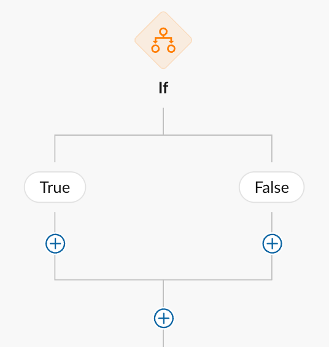
Flow control: switch
Switch nodes provide users with the way of selecting a single variable, and to generate any number of paths to follow based upon the value of that variable. Switch nodes are very powerful because they can be much more flexible in dealing with more complex decision trees, as more traditional condition nodes are restricted to testing a single condition: if this, then that.
You can see what a switch node looks like in our visual workflow designer below.
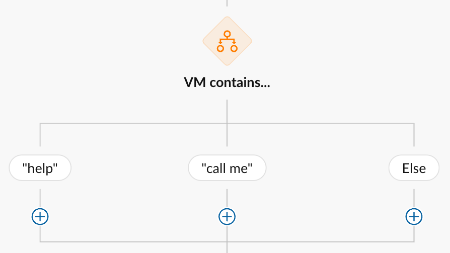
Selecting the switch variable
When creating a switch node, the first thing you must do is select the variable that will be used in evaluated which branch or path the workflow will follow. So step one, shown below, is about selecting this variable.
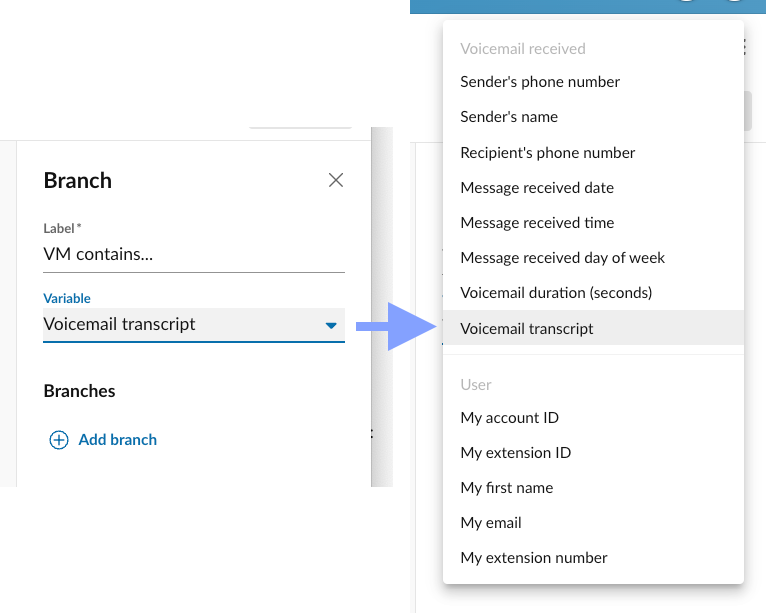
Adding switch branches
Once you select the variable, you can click the "Add branch" button to add as many logical paths or branches that can stem from the value of this one variable. One really good use case for this is in writing different responses to incoming text messages. For example:
- If the incoming SMS message has "directions" in it, send a link to Google Maps.
- If the incoming SMS message has "hours" in it, send our office hours.
- If the incoming SMS message has "sales" in it, alert our sales staff about a new lead.
- If the incoming SMS message has "help" or "support" in it, send a link to our contact us page.
- Otherwise, a.k.a. "else," do this other thing.
The above scenario illustrates how a single switch statement can power a relatively complex SMS auto-reply system.
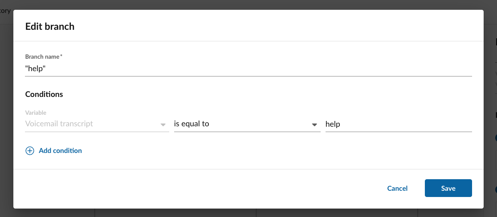
Actions
Action: comment
Inserts a log entry into the current workflow's history. This is especially helpful when trying to debug or troubleshoot a workflow, allowing users to see the value of a given variable to better understand how that variable may impact the logic or flow of a workflow.
Comments have no functional impact on a workflow.
Input
| Variable | Type | Description |
|---|---|---|
| Comment text | String | The message you wish to save to your workflow history. Users can insert variables into a comment that will be substituted for the corresponding value prior to the log entry being saved. To see a complete list of variables you can insert into a comment, type the "#" (hash sign) into the text input. |
Output
None.
Action: create personal contact
Creates a new record within the current user's personal address book.
Personal address book limitations
Workflow Builder does not have the ability to create records within a company's primary directory, as that is most often managed externally to RingCentral. One is only able to add record's to their personal address book. Therefore, bear in mind that every user has their own address book.
Input
| Variable | Type | Description |
|---|---|---|
| First name | String | This value will be assigned to the contact's first name property. |
| Last name | String | This value will be assigned to the contact's last name property. |
| This value will be assigned to the contact's email property. | ||
| Phone number | Phone number | This value will be assigned to the contact's phone number property. |
| Phone number label | Phone number | This value will be assigned to the contact's phone number label property. |
| Company | String | This value will be assigned to the contact's company property. |
| Notes | String | This value will be assigned to the contact's notes property. |
Output
None.
Action: create meeting bridge
Creates a meeting bridge in which a meeting can take place. A meeting "bridge" is RingCentral parlance for a meeting room or meeting URL. When you create a bridge, you will obtain through the action's output, a URL that when clicked on will start a meeting.
How do I specify a meeting start and end time?
You may notice that you do not need to provide a date and time in order to create a meeting. That is because RingCentral delegates the schedule of a meeting exclusively to the calendaring system in which a meeting URL is inserted. Therefore, all this action will do is generate a room in which a meeting will occur, and provide that URL to you as output so that you can transmit to a person or external system.
Input
| Variable | Type | Description |
|---|---|---|
| Meeting name | String | The name of the meeting |
| Meeting password | String | The password required to access the meeting. |
| Participants can only join after me | boolean | An option to not start the meeting until the host arrives. |
| Enable waiting room for | boolean | An option to determine whom will be placed in a waiting room prior to the start of the meeting. |
Output
| Variable | Type | Description |
|---|---|---|
| Meeting link | URL | The meeting bridge's fully-formed join URL. |
Action: exit automation
Causes the workflow to terminate. Every workflow MUST end with an exit action. If any branch within a workflow lacks an exit action, the workflow will be considered incomplete and cannot be saved.
Input
None.
Output
None.
Action: lookup contact
Looks up a contact in your RingCentral address book, both your internal company directory, as well as your personal address book.
When combined with the "create contact" action, this is very helpful in creating customized responses based upon whether you have previously corresponded with an individual. It is also useful to be able to disambiguate between internal communications (does the person sending me an SMS have an entry within our internal company directory?) and external or customer communications.
There is no guarantee that every output variable will contain a value. What gets returned depends upon what data is stored for that contact.
Input
| Variable | Type | Description |
|---|---|---|
| Phone number | Phone number | Looks up a contact by phone number. |
Output
| Variable | Type | Description |
|---|---|---|
| Contact exists | boolean | "True" if the phone number was found in any address book, and "false" otherwise. |
| Is personal contact | boolean | "True" if the phone number was found in the current user's personal address book, and "false" otherwise. |
| Is from company directory | boolean | "True" if the phone number was found in the current account's company directory, and "false" otherwise. This typically signifies a co-worker. |
| Contact first name | String | |
| Contact last name | String | |
| Contact name | String | |
| Contact email | ||
| Contact company | String | |
| Contact job title | String | |
| Contact business phone | Phone number | |
| Contact home phone | Phone number | |
| Contact mobile phone | Phone number | |
| Contact company phone | Phone number | |
| Contact assistant phone | Phone number | |
| Contact other phone | Phone number | |
| Contact primary phone | Phone number | |
| Contact business phone | Phone number | |
| Contact business address street | String | |
| Contact business address city | String | |
| Contact business address state | String | |
| Contact business address zip | String |
Action: parse JSON
Extracts specific data points from a JSON data structure or from a variable of type "Object." This is useful for example when processing the response that is returned in an API call made through the "Send HTTP request" node.
Input
| Variable | Type | Description |
|---|---|---|
| JSON variable | Object/JSON | The source variable or JSON structure to be parsed. |
| Output variables | List | A series of defined extractions. Each requires a JSON selector, a name, a type, and an error handling rule. |
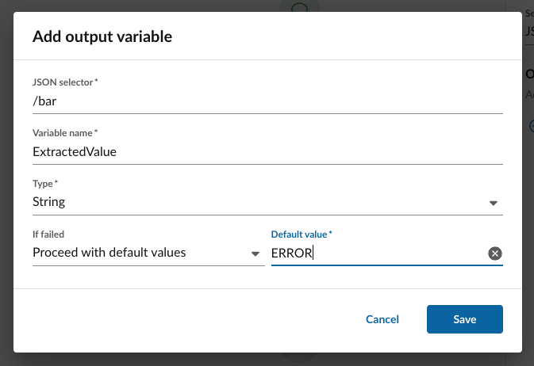
Configuration Details
For each output variable defined, the node requires:
- JSON Selector: The path used to identify the location in the document from which to extract the value.
- Name: The name of the variable to be created.
- Type: The data type of the extracted value.
- Error Handling: The logic to follow in the event the selector fails or the data is missing.
Error handling
Each output variable can define what to do in the event of a failed extraction. Options include:
- Fail workflow execution. This terminates the workflow and marks it as an error.
- Proceed with default values. This allows execution of the workflow to continue and populates the output variable with a default value the user provides.
- Log a warning and continue execution. This allows execution of the workflow to continue, logs a warning visible in the execution history, and assigns a null value.
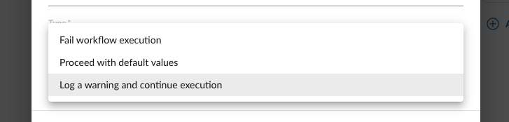
Output
The node outputs individual variables as defined in the "Output variables" section.
Action: place call (via RingOut)
Initiates a phone call between two parties using the RingOut protocol. The RingOut protocol works by calling the caller (the person initiating the call). When the caller answers the phone, the other party to the phone call is then called. When the intended recipient answers, the two parties are then connected.
Input
| Variable | Type | Description |
|---|---|---|
| Originating phone number | Phone number | The phone number of the caller. |
| Recipient phone number | Phone number | The phone number of the callee, or recipient of the caller's call. |
| Prompt before connecting calls | boolean | An option to prompt the caller to press "1" prior to calling the caller. |
Output
None.
Action: send chat message
Sends a chat message to a team, group or person via RingCentral's unified messaging application.
When selecting the chat you want to post your message to, you may observe that not all chats can be found in the select menu, especially if that team was added recently. In this circumstance, logout of Workflow Builder and then log back in so that you can force the list of teams to be updated. In the future, the ability to refresh the list of teams without logging out will be added.
Specifying a chat to post to
When using the Workflow Builder user interface, selecting a chat is relatively easy, as Workflow Builder allows you to search for the team, group, or chat by name. You may also refer to a conversation by it's ID. The ID for a chat can be found by obtaining the comversation URL from RingCentral's unified messaging app. The ID are the string of digits at the end of the URL. For example, for the following URL, the chat ID is 206018527234.
https://app.ringcentral.com/l/messages/206018527234
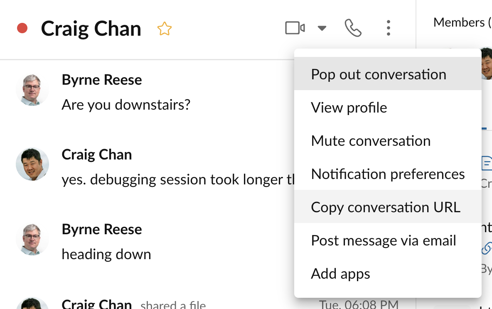
Input
| Variable | Type | Description |
|---|---|---|
| Recipient conversation | Integer | The team, group, or direct chat you want to post the message to. The destination of the message can be selected from a pull-down menu. |
Output
None.
Action: send SMS
Sends text via SMS from one phone number, to another phone number. When using the "Send SMS" action, please bear in mind the following:
- sending SMS via the RingCentral platform may incur additional costs depending upon your license
- sending an SMS does not guarantee that an SMS message will be delivered, especially if the receiving phone number is incapable of receiving an SMS, e.g. a fax machine
- one's ability to send an SMS depends upon the workflow's owner being assigned a phone number from which SMS are allowed to be sent
- one's ability to send an SMS depends upon an administrator setting up their account properly to send SMS after having gone through the TCR process of registering campaigns and so forth
Enabling SMS for your account
If you are having difficulty sending SMS from your account, or if you see the following message when editing a "Send SMS" action node, then please consult our knowledge base and community to help diagnose the root cause.
You are not permitted to send SMS messages because your phone number is not yet setup for SMS. To resolve this problem please consult our help documentation.
Input
| Variable | Type | Description |
|---|---|---|
| Sender's phone number | Phone number | This refers to the phone number the recipient of the SMS will see as the sender of the message they receive. A user can only send SMS messages from phone numbers they are authorized to send SMS messages from, and from phone numbers that for which SMS has been enabled. |
| Recipient's phone number | Phone number | This refers to the phone number the SMS message will be sent to. While there are no restrictions placed on the recipient's phone number, users should be aware that not all phone number are necessarily capable of receiving an SMS, and that Workflow Builder is not able to distinguish between those than can and those that can't receive SMS. |
| Message text | String | The message you wish to send to the recipient. Users can insert variables into a message that can will be substituted for the corresponding value prior to the message being sent. For example, you wish to address the receipient by name, you can insert the following variable into your SMS text message: {trigger.sender.name}. To see a complete list of variables you can insert into a message, type the "#" (hash sign) into the text input. |
Output
None.
Action: send HTTP request
This action will transmit an HTTP request to a given URL. This is especially useful when integrating with third-party services in which there is a need to transmit content to an external API or service.
Limitations
Currently, this action does not parse the response or make the contents of the response available to subsequent actions. Therefore, it may be difficult to detect and respond to errors.
Input
| Variable | Type | Description |
|---|---|---|
| URL | URL | The URL to make the HTTP request to. |
| Method | String | The HTTP method of the request. Supports GET, POST, PUT, PATCH and DELETE. |
| Content-type | String | The content-type of the request. |
| Request body | String | The body of the request, used in POST, PUT, PATCH and DELETE requests. |
| Headers | KeyValue | The HTTP headers of the request. |
Authenticating with RingCentral APIs
When the HTTP request action is used to call a RingCentral API, which we detect by looking at the hostname of the URL, the request's Authorization header will be set for you automatically using the workflow runner's access token.
Output
None.
Action: Set variable
Responsible for declaring a local variable within the workflow. This is useful for storing a specific value that needs to be referenced in multiple locations, ensuring consistency and making the workflow easier to maintain.
Input
| Variable | Type | Description |
|---|---|---|
| Variable name | String | The unique name used to reference this value throughout the workflow. |
| Data type | List | The specific format of the data (see supported types below). |
| Value | Varied | The actual data or reference value to be stored in the variable. |
Supported Data Types
Defining the correct type allows Workflow Builder to provide the appropriate interface (e.g., a search dialog or a toggle) when a user is prompted to provide a value.
- String: A simple scalar text value.
- Number: A numeric value (integer, floating point, etc.).
- Boolean: A true/false value.
- Object: A JSON data structure or associative array.
- Array: A list of multiple values.
- Team ID: A specific ID for a team chat or direct message conversation.
Note on Referential Integrity
To maintain the stability of the workflow, you are not permitted to edit the data type of variables that are currently being referenced by other nodes in the workflow.
Output
The node outputs individual variables as defined in the "Output variables" section.
Action: transcribe media file
Given a media file that lives at an internet-accessible URL, generates a transcription and summary of the media file's contents.
This action is currently only available in Automator.
Authentication with the media URL
The system being interfaced with to access a media file must allow all authentication to happen via the URL, as one cannot customize the HTTP headers and other low-level aspects of the connection.
Input
| Variable | Type | Description |
|---|---|---|
| Audio media URL | URL | A URL to a media file that contains audio. |
| Language | String | The language of spoken words in the media file. |
Output
| Action Variable | Type | Description |
|---|---|---|
| Transcript | String | A full transcript of the referenced media file. |
| Sentiment | String | The overall sentiment of transcribed file. Values can be "postive," "negative," or "neutral." |
| Abstractive summary (long) | String | A synthesized summary of the contents of the transcript, in long form. |
| Abstractive summary (short) | String | A shortened synthesized summary of the contents of the transcript. |
Action: update personal contact
Updates an existing record in the current user's personal address book. Use the lookup contact action first to find the personal contact and obtain its contact ID.
Personal address book limitations
Workflow Builder can update contacts in the workflow owner's personal address book, but it cannot update records in the company directory.
Input
| Variable | Type | Description |
|---|---|---|
| Contact ID | String | Identifies the personal contact to update. |
| First name | String | Updates the contact's first name. |
| Last name | String | Updates the contact's last name. |
| Updates the contact's email address. | ||
| Phone number | Phone number | Updates the contact's phone number. |
| Phone number label | String | Identifies the type of phone number, such as business, mobile, or home. |
| Company | String | Updates the contact's company. |
| Notes | String | Updates the contact's notes. |
Output
None.